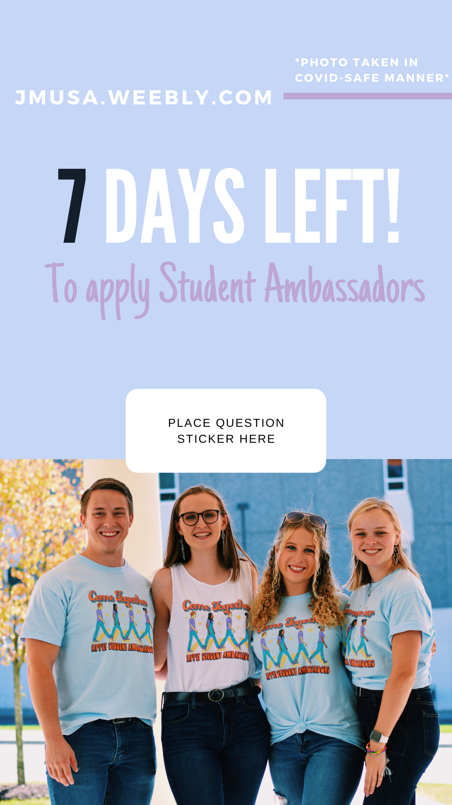

2020 Student Org Night
2019 Executive Board | President

2020 Apply SA
2019 Apply SA
2019 Story Highlights | Committees

2020 Senior Stories | Sara
Social media has been a very important part of my life. I’ve grown up in a digital age, and learned the ins and outs of social media for my own personal pages. As I got older, I discovered a passion for social media outside of my personal accounts and have since managed student organizations, colleges, and different companies’ social media pages. Below you will find a summary of my different accounts and the main lessons I learned from each, as well as some examples of past content.
When I first was elected Media & Communications Coordinator for Student Ambassadors, my main focus was our Instagram. A student organization like this needs to be active and engaged on social media to encourage involvement and serve as a proper resource for prospective students and families. I worked to create an aesthetic for our feed, develop story highlights that accurately reflect the mission of Student Ambassadors and use this platform as a means to engage with potential members and promote a variety of different activities.
With Student Ambassadors, I used Facebook mainly to promote our Membership Drive and engage with alumni and parents. Thanks to a combination of active social media and Facebook advertisements, we increased our applications for 2019 by 30% from Social Media advertising alone. Like most Facebook pages, ours is multi-faceted, so feel free to click on the link below to see the different ways I utilized this social media platform.
2020 Student Org Night
2019 Executive Board | President
2020 Apply SA
2019 Apply SA
2019 Story Highlights | Committees
2020 Senior Stories | Sara
When I started my internship with Cleod9 Music, a group that makes music scores for documentaries, this past summer, my main focus was building out an instagram aesthetic that was both desirable to the brand and potential clients. I worked closely with the CEO, Ian McLeod, to build out instagram stories and highlights for nearly all features, short films & docs, and commercials the group worked on over the years. In addition, I came up with a specific technique for posting these out, which included a cover image, a story of the brand, and a clip of the short film, commercial, or feature. Ultimately, my purpose with this social media rebrand was to give Cleod9 a social media presence that was both exciting and professional, encouraging artists and filmmakers to work with the group in the future!
Click below to check out Cleod9's Instagram and Facebook to learn more about the group and see the work I completed!
Cowboys

New Original Score
A Walk Through the Land of 1000 Hills
Massacre River
Austin Film Festival
The Push
This past semester, I was elected to be the social media coordinator and publicity chair for WXJM 88.7 Harrisonburg. This position is responsible mainly for promoting radio shows and painting an online social media presence. Through this position, I have dealt with the unique struggle of maintaining an organization’s presence and involvement through COVID-19. Social Media has been one of our main resources to keep members engaged, encourage new involvement, and secure listeners to our ongoing shows. My main focus for the semester was highlighting our weekly WXJM Live online streams with different local musical acts. WXJM also celebrated it’s 30th anniversary in October, in which I worked to build out nostalgic posts of WXJM through the years, telling stories from past and present members about how much the organization means to them.
Click on the links below to see WXJM's Facebook and Instagram pages in action! There you will find work I created over my past semester.
WXJM Live | Rose Blush
Talk Show | Radio 51
WXJM Live | Pony Boy
Meet WXJM
WXJM Live | Zach Benson

Second Line | Herbert
With the College of Integrated Science and Engineering (CISE), my main focus was creating a social media brand from scratch. I worked closely with my supervisor to create new aesthetics for different majors within the college and mainly focused on Integrated Science and Technology (ISAT). Together, we worked to create a Instagram page that encouraged student stories, brought alumni back to their college years and gave prospective students a better idea what ISAT could give them. I created infographics, videos, and story highlights to promote the program and combined this behind the scenes brainstorming and engagement.
Click below to see JMU's ISAT Facebook and Instagram pages in action and the work I created during my time with the college!